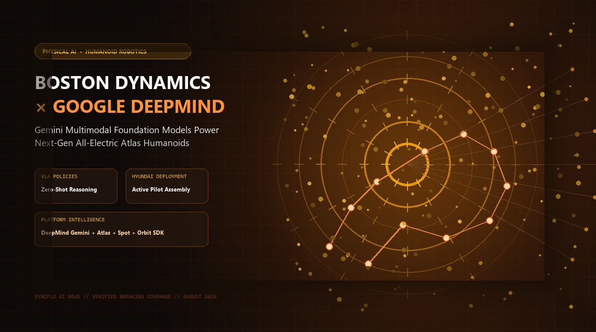

Boston Dynamics & Google DeepMind Form Strategic Alliance: Powering Next-Gen Atlas Humanoid Robots with Gemini Physical AI & Embodied Reasoning

WALTHAM, MA & MOUNTAIN VIEW, CA — August 26, 2026 — In one of the most consequential collaborations in the history of robotics, Boston Dynamics and Google DeepMind have entered an expansive strategic partnership to fuse Google DeepMind’s frontier multimodal foundation models—specifically Gemini Robotics—into Boston Dynamics' all-electric Atlas humanoid platform.
1. The Fusion of World-Class Hardware and Frontier Cognitive AI
For decades, Boston Dynamics has set the global benchmark for dynamic robot control, balance, and mechanical agility. However, deploying humanoid robots into unstructured, dynamic commercial and industrial environments requires human-level perception, spatial reasoning, and conversational instruction following.
Through this alliance, Google DeepMind's Gemini Robotics multimodal models provide Atlas with an embodied cognitive brain. Rather than executing rigid, pre-programmed trajectories, Atlas can now interpret complex multi-step verbal requests, perceive 3D spatial geometry in real time, and dynamically adjust its manipulation policies when unexpected obstacles occur.
"Combining Boston Dynamics' world-leading athletic physical robotics with Google DeepMind's cutting-edge Gemini reasoning models represents a watershed moment. We are moving from scripted automation to truly cognitive physical AI that can work safely and collaboratively alongside humans."
2. Vision-Language-Action (VLA) Architecture in Real-Time
The integration leverages end-to-end Vision-Language-Action (VLA) neural policies running both on-board local edge accelerators and high-throughput low-latency inference gateways:
- Zero-Shot Task Generalization: Atlas can manipulate unfamiliar automotive components, tools, and packaging containers without requiring per-object training data.
- Long-Horizon Task Planning: Gemini breaks down complex high-level objectives (such as "sort and verify sequencing for the chassis assembly kit") into coherent sequences of physical sub-tasks.
- Closed-Loop Tactile Feedback: High-frequency force-torque sensors in Atlas's custom bimanual hands feed continuous tactile representations into the policy to ensure delicate, slip-free handling.
- Multi-Agent Site Intelligence: The system coordinates with Boston Dynamics' quadruped robot Spot and the Orbit fleet management software, synchronizing factory-wide operations.
Key Technical Pillars: Boston Dynamics × Google DeepMind
3. Factory Floor Deployments at Hyundai Motor Group
Backed by Boston Dynamics' parent organization, Hyundai Motor Group, the initial commercial rollout is taking place in real-world automotive fabrication and parts distribution hubs.
In active pilot tests, Gemini-powered Atlas units have successfully conducted heavy automotive stamping transfers, bin picking of randomized fasteners, and automated battery cell inspection. By eliminating the need for custom mechanical fixturing, manufacturing facilities can reconfigure assembly lines dynamically in software.
4. What This Means for the Future of Physical AI
The partnership accelerates the transition of artificial intelligence from digital cloud screens into the physical world. As Google DeepMind continues to refine specialized physical world models and Boston Dynamics scales up hardware production, general-purpose humanoid robots are positioned to fundamentally transform logistics, advanced manufacturing, and construction by 2027.